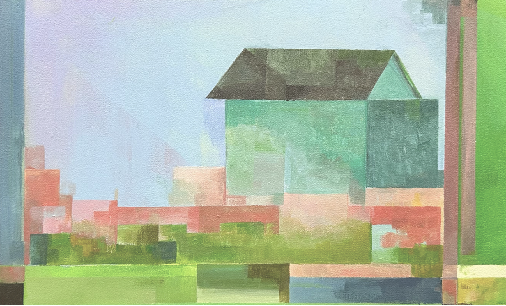
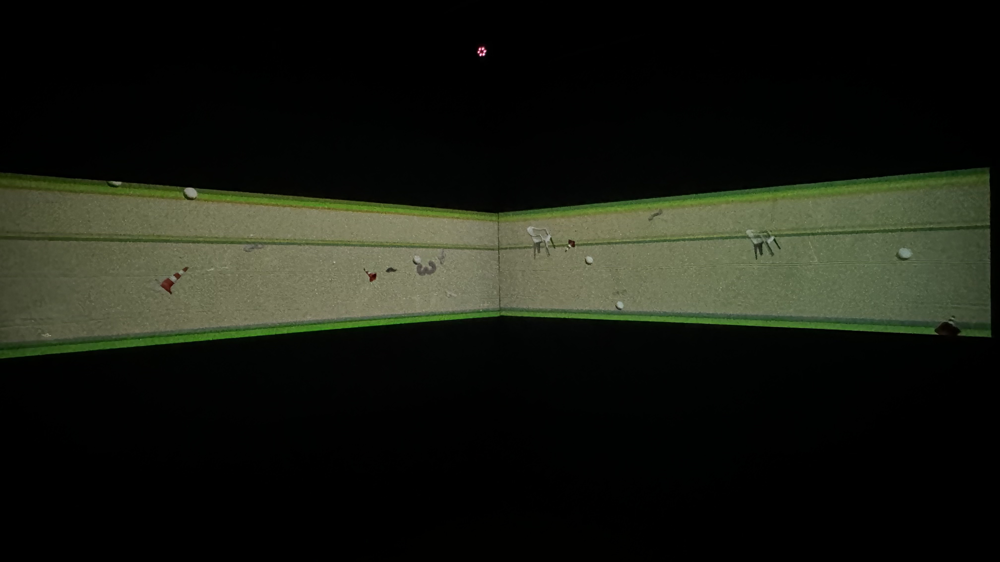
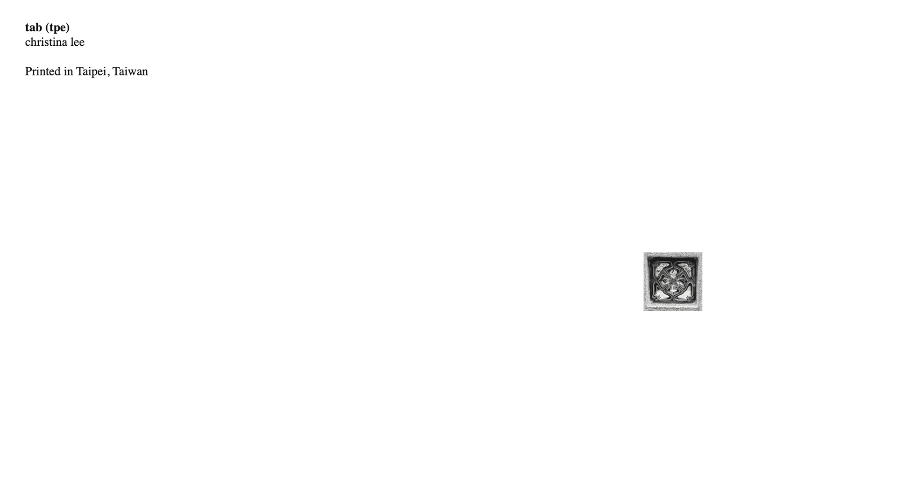
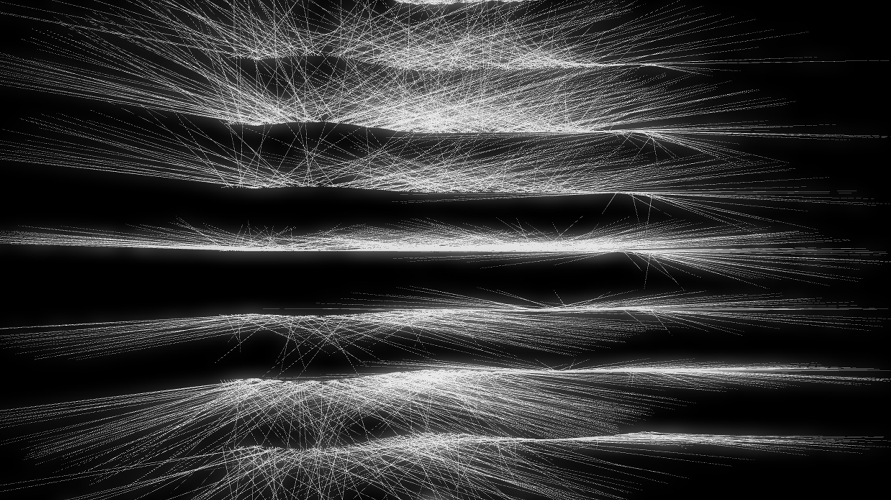
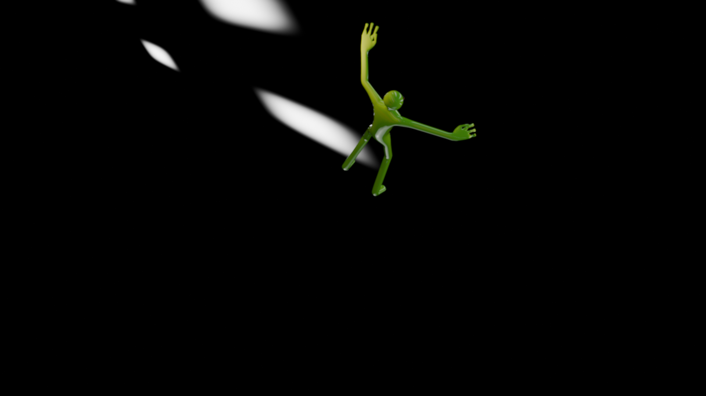
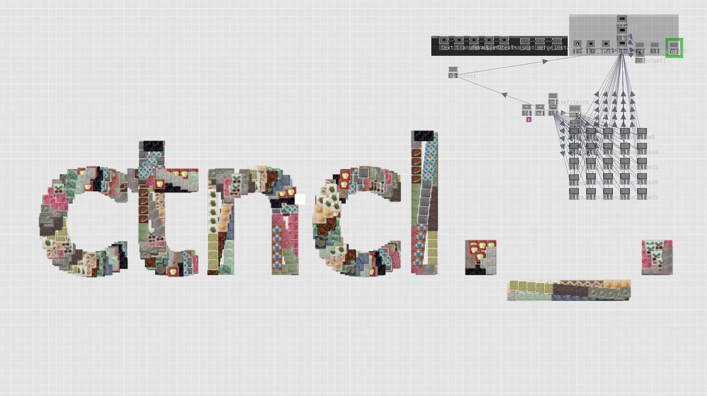
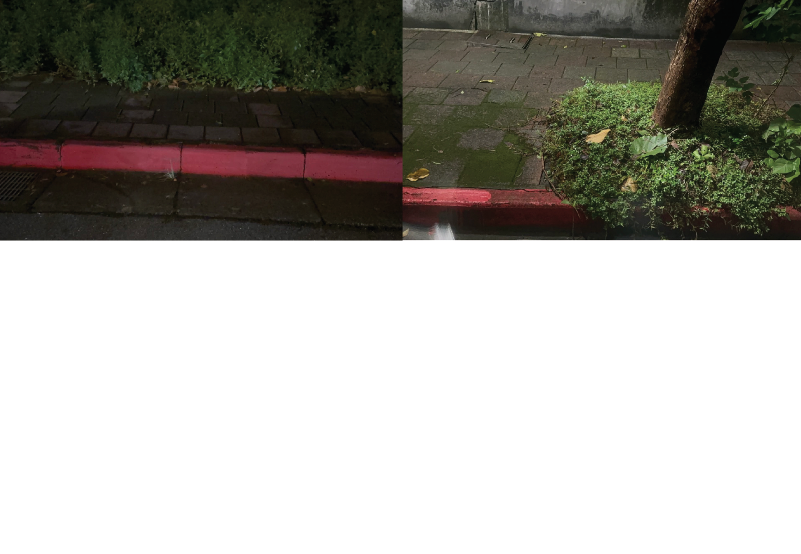

CHRISTINA LEE is a visual art studio using spatial frameworks and digital pipelines to expand human perception. Based across Malaysia and Taiwan, the studio focuses on how spatial boundaries can be altered to cultivate a deep sense of clarity and structural optimism.
The studio explores delicate loops of time, memory, and presence. By mapping raw artistic configurations directly against systematic media servers, we reconfigure traditional physical constraints into open environments.
- Exhibition Curation
- Spatial Layout Design
- Fine Art Execution
- AV Mapping Config
- Kuala Lumpur, MY
- Taipei, TW
- Experimental Inquiries
- Hardware Pipelines
- Resolume Arena
- Godot Engine Simulation
- Python Automation
- Adobe Creative Suite

SITUATIONAL PERCEPTION
This exhibition invites the audience to enter a world where the familiar stretches into a whole new visual. Inspired by architectural spaces, the visuals explore a balance of structure and spontaneity.

DRIFT
A multi-channel spatial alignment deployed inside an integrated black box gallery setup.

TAB(TPE): 1st PHOTOBOOK EDITION
A limited-edition publication mapping urban traces via strict geometry arrays.

From the Top to Bottom

Alien Interlude - 3D+VFX

Data & Interactive Pipelines
A structural registry tracking physical gallery production, international technical curatorial directions, and collaborative institutional installations.
Directed identity log systems, spatial configuration strategy, and asset layouts for the fine art survey.
Coordinated physical staging arrays for presentations including solo shows and art fairs.
• Bakat Mahasiswa Showcase, GMBB (2024)
• Bakat Mahasiswa Layout, SK Jugra (2023)
• Black & White Department Selection, MIA (2022)
TAB(TPE): 1st Photobook Edition
A geometric documentation framework parsing landscape profiles, structured grids, and environmental intervals across Taipei.
